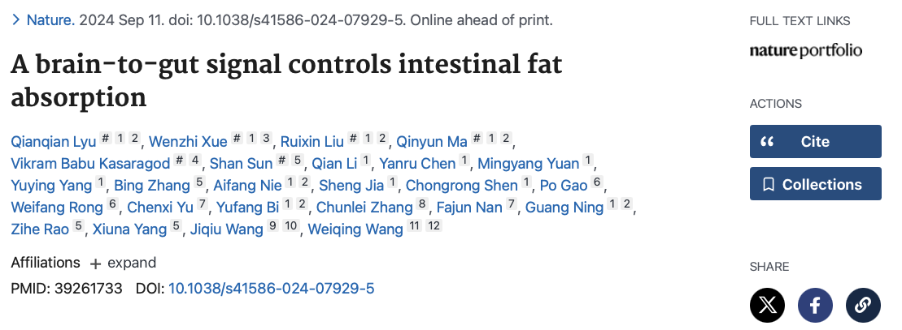
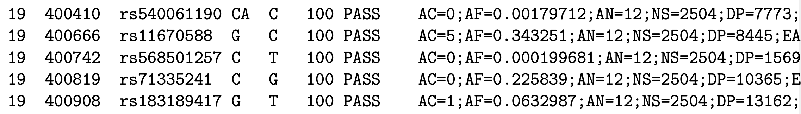
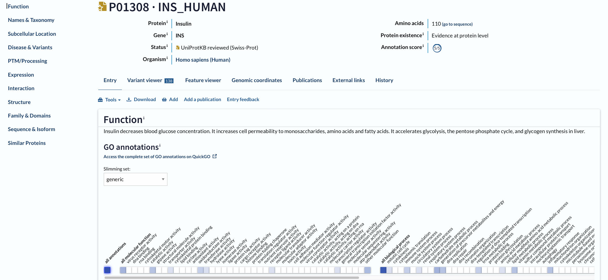
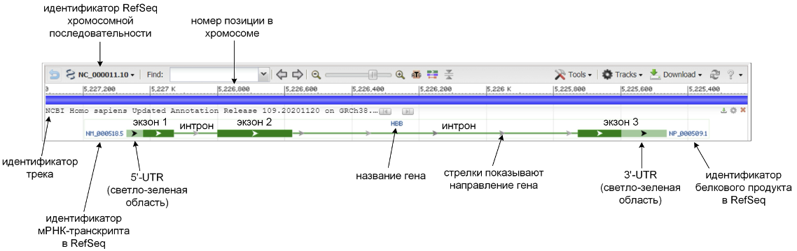
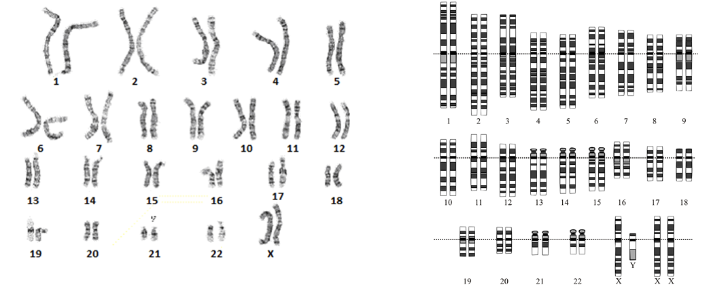

Биологические базы данных
Источники биологических данных
Корректный выбор данных является неотъемлемой и зачастую важнейшей частью современных биологических исследований. За последние полвека биология как наука, и методы ее изучения кардинально изменились. Уже в 1982 году была создана первая крупномасштабная база биомедицинских данных GenBank. В 2000 году был закончен “Human Genome Project” – проект по составлению полной последовательности человеческого генома. Над ним несколько лет трудились десятки лабораторий по всему миру. Сейчас же на одном лишь ПК, можно проектировать новые медикаменты, создавать улучшенные сорта растений, выявлять врожденные геномные мутации, проводить эволюционные исследования, моделировать виртуальные биологические системы и многое другое. Все это стало возможно благодаря все растущим биологическим базам данных.

Биологические данные, собранные человечеством, распределены в десятки (если не сотни) различных баз данных, самой крупной из которых является сервис NCBI - National Center for Biotechnology Information1.
Для изучения и знакомства со всеми биологическими базами данных вряд ли хватит целой книги, поэтому здесь мы рассмотрим главные из них.
Статьи
Базы данных
Google Scholar2 – бесплатная поисковая система по научным публикациям, запущенная в ноябре 2004 года. С помощью поисковых роботов портал индексирует метаданные и осуществляет полнотекстовый поиск по научной литературе, включая журнальные статьи, препринты, диссертации, книги и технические отчёты. Пользователи могут искать нужные работы по авторам, ключевым словам, названию журнала. Углублённый поиск позволяет ранжировать материалы по публикации, дате и предметной области.
Академия Google не предоставляет данные о точном количестве проиндексированных работ, однако, по предварительным подсчётам, на 2019 год их было не менее 390 млн. Несмотря на отсутствие достоверных данных о размере базы, портал считается крупнейшей в мире академической поисковой системой, со степенью охвата до 90
Google Scholar хотя и является крупнейшей базой данных научных работ, далеко не всегда позволяет найти качественные статьи, поскольку туда попадают любые индексируемые работы, не всегда подвергнутые тщательному ревьюированию.
PubMed3 – бесплатная поисковая система по биомедицинским исследованиям, созданная NCBI в 1997 году. Ежедневно портал посещают около 2,5 млн пользователей.
PubMed – предоставляет доступ сразу к нескольким базам данных, однако ключевой считается коллекция MEDLINE, содержащая более 30 млн цитирований по естественным, химическим, поведенческим наукам, в том числе по биоинженерии и биофизике. Со временем в PubMed были интегрированы базы данных PreMEDLINE, OLDMEDLINE и книжная коллекция NCBI. PubMed также предоставляет доступ к онлайн-репозиторию PubMed Central.
Домашняя страница PubMed содержит простое окно поиска и гиперссылки на руководства, инструменты и другие ресурсы. После того как пользователь вводит вопрос, PubMed автоматически уточняет его через систему идентификации MeSH (Medical Subject Headings). Это позволяет проводить наиболее тщательный поиск по всем материалам в связанных базах данных.

PubMed не хранит полные версии самих статей. Однако если полная версия работы доступна на сайте издательства, то система автоматически генерирует на неё ссылку, даже если статья скрыта за пейволлом. Если полнотекстовая версия размещена в репозитории PubMed Central, ссылка на полный текст появится при отображении её аннотации в PubMed.

В PubMed индексируются не все существующие биологические журналы. Если поиск не дает результатов, попробуйте Google Scholar, или даже просто Google поиск. Однако начинать все же лучше с PubMed.
bioRxiv (произносится как «биоархив») — бесплатный электронный архив научных статей и препринтов по биологии. Авторы публикуют на bioRxiv ранее не рецензированные работы, чтобы получить фидбэк от других участников портала или утвердить первенство открытия. Перед публикацией рукописи не рецензируются, однако проходят первичную проверку модераторов на плагиат. Около 30 % авторов впоследствии размещают на портале отредактированные с учётом полученных комментариев версии. Большинство представленных на bioRxiv рукописей в результате публикуются в рецензируемых журналах.
У любой научной публикации существует DOI (digital object identifier) – цифровой идентификатор объекта, а не идентификатор цифрового объекта. DOI начали использовать с 2000 года, в настоящее время их присваивают более 5000 органов (издательства, центры научных данных, киностудии и другие). Имеется более 100 миллионов имен DOI и более 1,5 миллиарда публикаций DOI в год. DOI порой присваивают и публикациям, созданным задолго до начала его использования.
Структура статьи

Почти все статьи структурированы похоже:
Title - Что исследовали + что получили очень кратко.
Authors
Keywords
Abstract - Что исследовали + что получили развернуто.
Introduction - Введение в проблему и постановка задачи
Method - Как исследовали?
Results - Что получили?
Discussion - Какие выводы можно сделать из проведенного исследования?
Conclusion - Итог.
Acknowledgements
References
Как читать статьи
Если пытаться читать статьи последовательно, как книгу, то данное занятие скорее всего окажется очень утомительным и не слишком продуктивным. Конечно, навык в чтении и понимании статей набирается с опытом, и вырабатываемый метод индивидуален, однако существует несколько основных общих принципов:
В первую очередь, нужно хорошо сформулировать вопрос, на который вы хотите найти ответ в статьях. Когда он будет готов, можно проводить поиск по ключевым словам, которые его описывают.
Порядок чтения статьи:
Abstract – подходит ли мне эта статья по содержанию?
Conclusions - являются ли результаты этой статьи существенными в моем вопросе?
Results - какие именно результаты получили исследователи?
Materials and methods – как эти результаты были получены?
Если на каждом этапе ответ на поставленный вопрос оказывается неудовлетворительным, то скорее всего следует продолжить поиск подходящей литературы.

Omics data
Отрасль науки, неофициально известная как омика, представляет собой различные дисциплины в биологии, названия которых оканчиваются на суффикс -омика, такие как геномика (ДНК), протеомика (белки), метаболомика (биохимические взаимодействия), метагеномика и транскриптомика (РНК). Омика направлена на коллективную характеристику и количественную оценку наборов биологических молекул, которые отражают структуру, функцию и динамику организма или организмов.
Типы данных
Данные, отражающие фундаментальные знания (aka reference – FASTA, GFF, BED)
Экспериментально полученные данные (aka sequencing reads: FASTQ)
Данные, сгенерированные анализом (aka results: BAM, VCF, other.)[@biostar]
FASTA
FASTA — текстовый формат для нуклеотидных или полипептидных последовательностей, в котором нуклеотиды или аминокислоты обозначаются при помощи однобуквенных кодов. Из-за своей простоты и практичности в настоящее время используется большинством программ работы с биологическими последовательностями. Файлы данного формата могут содержать названия последовательностей, их идентификаторы в базах данных и комментарии. В зависимости от природы содержащихся в нем биологических последовательностей файл формата FASTA может иметь различные расширения.
Расширения – .fa, .fasta, .fna.

FASTQ
Формат FASTQ — текстовый формат данных, используемый для представления биологической последовательности (обычно нуклеотидной последовательности) и показателей качества каждого элемента последовательности. Элементы последовательности и их показатели качества кодируются для краткости одиночными символами ASCII.

GFF/GTF/BED
Форматы GFF/GTF/BED - это так называемые «интервальные» форматы, в которых сохраняются только координаты региона в геноме. Каждый из них разграничен табуляцией и содержит информацию о хромосомной координате, начале, конце, нить, значении и других атрибутах, хотя порядок столбцов зависит от формата.
Трехстолбцовый BED содержит информацию о хромосоме, начале и конце региона.

Шестистолбцовый BED также содержит название региона, значение какой-либо характеристики (depends…) и нить ДНК.

GFF/GTF форматы имеют 9 столбцов, их спецификацию можно найти на сайте UCSC4.

SAM/BAM
Sequence Alignment Map5 (SAM) - текстовый формат для хранения биологических последовательностей, выровненных относительно референсной последовательности. Он широко используется для хранения данных, таких как нуклеотидные последовательности, генерируемые технологиями NGS.
Binary Alignment Map (BAM) - бинарная версия SAM.

VCF
Variant Call Format6 (VCF) - это стандартный формат текстовых файлов, используемый в биоинформатике для хранения вариаций генных последовательностей.

Базы данных
INSDC7 (International Nucleotide Sequence Database Collaboration) – коллаборация организаций осуществляющая хранение “основных” геномных данных. Участниками организации являются:
NCBI8: National Center for Biotechnology Information
EMBL9: European Molecular Biology Laboratory
DDBJ10: DNA Data Bank of Japan
INSDC установил правила в отношении типов данных, которые будут копироваться. Наиболее важными из них с точки зрения биоинформатика являются:
GenBank
GenBank11 содержит всю аннотированную и идентифицированную информацию о последовательности ДНК.

SRA
SRA12: Short Read Archive содержит данные, полученные в ходе высокопроизводительного секвенирования.

UniProt
UniProt13: Universal Protein Resource хранилище данных о последовательности и характеристиках белков.

PDB
Protein Data Bank14 (PDB) является основным хранилищем структурной информации о биологических макромолекулах (белках и нуклеиновых кислотах). PDB содержит структуры для целого спектра биомолекул - от небольших кусочков белков/нуклеиновых кислот до сложных молекулярных структур, таких как рибосомы.


Notable mentions
UCSC Genome Browser15 - предлагает подробные данные о геномах млекопитающих, а также утилиту для их просмотра.
RNA-Central16 – мета-база данных, объединяющая информацию из нескольких других ресурсов.
Ensembl17 — совместный научный проект Европейского института биоинформатики и Института Сенгера. Основной задачей этого проекта является обеспечение специалистов интегрированным доступом к базам данных, касающихся строения геномов более 50 видов позвоночных, включая человека (Homo sapiens), мышь (Mus musculus), крысу (Rattus norvegicus), рыбку Данио-рерио (Danio rerio) и др. Базы данных Ensembl регулярно обновляются с частотой не менее двух раз в год.
FlyBase18 - это база данных генов и геномов дрозофилы (плодовой мушки).
WormBase19 - это основной ресурс по биологии нематод.
SGD20: Saccharomyces Genome Database предоставляет всестороннюю биологическую информацию о дрожжах Saccharomyces cerevisiae, а также инструменты поиска и анализа для изучения этих данных.
TAIR21 The Arabidopsis Information Resource - это основной ресурс генетических и молекулярных данных о модельном растении Arabidopsis thaliana.
EcoCyc22 (Encyclopedia of E. coli Genes and Metabolic Pathways) - это научная база данных о бактерии Escherichia coli K-12 MG1655.
GeneCards23 - это интегративная база данных с возможностью поиска, которая предоставляет полную и удобную для пользователя информацию обо всех аннотированных и предсказанных генах человека. База данных автоматически объединяет данные из 150 веб-источников, включая геномную, транскриптомную, протеомную, генетическую, клиническую и функциональную информацию.
MGI24: (Mouse Genome Informatics) собирает и хранит всесторонние фенотипы и функциональные аннотации для генов и аллелей мыши.
Сборки геномов
Референсный геном (референсная сборка) - это цифровая база данных последовательностей нуклеиновых кислот, собранная учеными как репрезентативный пример набора генов в одном идеализированном индивидуальном организме какого-либо вида. Поскольку они собираются на основе секвенирования ДНК нескольких индивидуальных доноров, референсные геномы не могут представлять точный набор генов какого-либо отдельного организма. Вместо этого эталон представляет собой гаплоидную мозаику из различных последовательностей ДНК от каждого донора. Например, один из самых последних референсных геномов человека, сборка GRCh38/hg38, получена из >60 библиотек геномных клонов. Существуют референсные геномы для множества видов вирусов, бактерий, грибов, растений и животных. Референсные геномы обычно используются в качестве основы для выравнивания чтений других геномов, что позволяет собирать их гораздо быстрее и дешевле, чем в рамках первоначального проекта «Геном человека». Доступ к референсным геномам можно получить онлайн в нескольких базах данных, используя специальные браузеры, такие как Ensembl или UCSC Genome Browser.
Сколько существует сборок человеческого генома? 38 на данный момент. Увы, существуют не только различные геномные сборки, но и различные ресурсы по распространению данных могут расходиться во мнениях относительно того, как маркировать одни и те же данные.

Human Gene Nomenclature Committee25 (HGNC) является единственной организацией, которая присваивает стандартную номенклатуру генам человека. Названия, присваиваемые HGNC, обычно формируются из так называемого корневого (stem) символа, который используется в качестве основы для серии утвержденных символов, которые определяются как члены функционального или структурного семейства генов. Например, CYP: cytochrome P450; HOX: homeobox; DUSP: dual specificity phosphatase; SCN2A: sodium channel voltage-gated type II alpha 2 polypeptides и т. д.
Genome browsers
Геномный браузер - это графический интерфейс для отображения информации из базы геномных данных. Большинство геномных браузеров рисуют дорожки, представляющие прямую нить генома в направлении от 5’ (слева) к 3’ (справа). Геномные признаки, нарисованные на этой линейной дорожке, называются глифами. Глиф - это пиктограмма, соответствующая определенной геномной характеристике. Универсального стандарта, определяющего все инструменты визуализации, не существует. Интерпретация глифов приходит с опытом и уровнем знакомства с каждым инструментом. Например, здесь представлен снимок экрана по умолчанию геномного браузера UCSC:

В большинстве случаев геномные браузеры работают только с данными в простых форматах: FASTA, BED, GFF, SAM/BAM. Форматы данных, содержащие более сложную информацию, такие как GenBank или EMBL, обычно нуждаются в преобразовании и упрощении в линейно-ориентированный формат, например BED или GFF. Большинство инструментов визуализации поставляются с предварительно загруженными данными, а также с различными геномными сборками для широко используемых организмов: человека, мыши и т. д. Это означает, что данные для многих геномных характеристик, скорее всего, уже имеются. Для других организмов зачастую требуется самостоятельно загружать данные в браузер.
| Standalone | Online |
| IGV (Integrative Genomic Viewer) | UCSC Genome/Table Browser |
| JBrowse2 | Ensembl Genome Browser |
| Genoverse | NCBI Genome Data Viewer |
Интерпретация глифов
Глифы - это визуальное представление некоторых геномных характеристик:
Горизонтальные интервалы: направления, гены, выравнивания
Значения через интервалы: покрытия, вероятности
Атрибуты в местах расположения: мутации, делеции, и т.д.
На рисунке показан пример такого отображения для геномного браузера NCBI Genome Data Viewer (показан ген HBB бета-цепи гемоглобина человека):

Транскрипты схематически изображаются в виде соединенных линиями прямоугольников. Прямоугольники соответствуют экзонам гена, а закрашенная (темно-зеленая) область в прямоугольниках соответствует белок-кодирующей последовательности. Линии, соединяющие прямоугольники, соответствуют интронам. Слева от транскриптов указаны их идентификаторы, а справа – идентификаторы соответствующих им белковых продуктов.
Идентификаторы (Accession number) белок-кодирующих мРНК-транскриптов в базе данных RefSeq начинаются с префикса “NM_”. RefSeq содержит также файлы соответствующих транскриптам белковых продуктов (их последовательность определяется по открытой рамке считывания в транскрипте), они имеют идентификаторы с префиксом “NP_”. Теоретически предсказываемые мРНК-транскрипты (имеющие статус “predicted” или “model”) и соответствующие им белковые продукты имеют идентификаторы с префиксами “XM_” и “XP_” соответственно.
Для указания хромосомной локализации гена (т.н. хромосомного локуса) используется следующая система обозначения. Локус записывается в виде
\(N[p/q]RB.S\)
где N – номер хромосомы, p или q – обозначают короткое или длинное плечо хромосомы (от фр. petit – “малый”, queue – “хвост”), R – номер области (region), B – номер зоны (band), S – номер подзоны (sub-band). Пример локуса для гена альбумина (ALB) – 4q13.3. Зоны в данном случае соответствуют цитогенетическим зонам, получаемым при G-окрашивании хромосом красителем. Такое окрашивание используется для определения кариотипа, поскольку распределение темных (гетерохроматин) и светлых (эухроматин) полос позволяет однозначно идентифицировать хромосомы:

Задание
По полученному топику произвести поиск в PubMed и определить, какой ген (вместо gene X) может участововать в данном биологическом процессе.
Найти ген в базах данных GenBank, Ensembl. Выписать:
Хромосомный локус гена.
Полное название.
Альтернативные названия.
Идентификаторы NCBI (Entrez ID), Ensembl, HGNC.
Краткое описание гена.
Найти ген в геномных браузерах UCSC, Ensembl и NCBI. Сохранить картинки, генерируемые геномными браузерами, где будет изображен выбранный ген.
Картинку гена из NCBI Genome Viewer разметить, показав на ней положение экзонов и 3’/5’-UTR областей.
Скачать FASTA последовательность нуклеотидной и аминокислотной последовательностей гена.
Найти белковый продукт гена в базе данных UniProt, выписать:
Субклеточную локализацию белка.
Идентификаторы белковых изоформ.
Найти 3D-структуру белкового продукта гена в PDB. Сохранить ее в виде картинки.
Варианты
The role of gene X in repair of double-strand breaks during homologous recombination.
The role of gene X in the G1/S transition of the cell cycle.
The role of gene X in intrinsic apoptotic signaling triggered by mitochondrial stress.
The role of gene X in senescence and its connection to tumor suppression.
The role of gene X in modulating interferon responses during viral infection.
The role of gene X in axon guidance during early neurodevelopment.
The role of gene X in insulin resistance in adipocytes under high-fat diet conditions.
The role of gene X in epithelial-mesenchymal transition during tissue regeneration.
The role of gene X in vascular endothelial cell migration during angiogenesis.
The role of gene X in histone modification and chromatin remodeling in epigenetic silencing.
The role of gene X in cellular response to reactive oxygen species in mitochondria.
The role of gene X in fibroblast activation during wound repair.
The role of gene X in autophagosome formation and lysosome fusion.
The role of gene X in myoblast fusion during muscle fiber formation.
The role of gene X in extravasation of metastatic cancer cells.
The role of gene X in cholesterol transport between organelles.
The role of gene X in regulating circadian oscillations in peripheral tissues.
The role of gene X in mitochondrial dynamics, specifically fission and fusion.
The role of gene X in endothelial cell specification during heart development.
The role of gene X in modulation of macrophage polarization during inflammation.